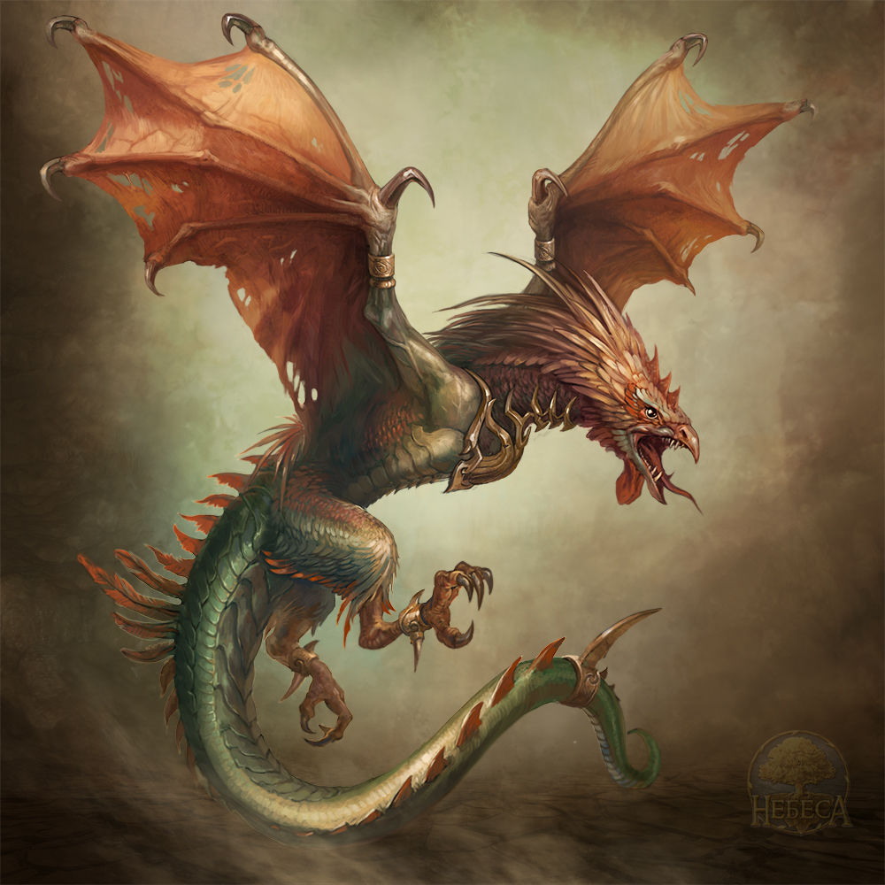

The Wyvern (/ˈwaɪvərn/ WY-vərn, sometimes spelled wivern) is a variant of the dragon, but with only the pair of back legs and the wings.The Wyvern has the head of a dragon, and its forked tongue, scaly neck and leathery wings, but combines with these the two clawed feet of an eagle (whereas the dragon has four), and a long, serpentine tail which is often depicted as knotted, or twined upon itself, to indicate the extreme venomousness and violent temper of the monster.
These dreadful creatures were thought to pollute the earth over which they traveled. In their wake the grass was marked and fungus grew (hence 'fairy rings'), while loathsome slime (such as frogspawn) or distorted creatures (such as flounders) spawned.The Wyvern shares the Dragon's passion for treasure, and its capacity for vigilance. Like the Dragon, the Wyvern is said to be preternaturally hot - hence, according to a seventeenth-century authority on heraldry, who in turn took his cue from the Prophet Jeremiah (xiv, 6) the fact that Wyverns and Dragons are always shown with their mouths wide open, as if gulping the cooling air.
COCKATRICE A cockatrice is a Biblical beast, essentially a two-legged dragon, wyvern, or serpent-like creature with a rooster's head. Described by Laurence Breiner as "an ornament in the drama and poetry of the Elizabethans", it was featured prominently in English thought and myth for centuries.
The cockatrice was first mentioned in the Bible in Isaiah chapters 11, 14 and 59. It is described in its current form in the late fourteenth century. The Oxford English Dictionary gives a derivation from Old French cocatris, from medieval Latin calcatrix, a translation of the Greek ichneumon, meaning tracker. The twelfth century legend was based on a reference in Pliny's Natural History that the ichneumon lay in wait for the crocodile to open its jaws for the trochilus bird to enter and pick its teeth clean.An extended description of the cocatriz by the 15th-century Spanish traveller in Egypt, Pedro Tafur, makes it clear that this refers to the Nile crocodile. According to Alexander Neckam's De naturis rerum (ca 1180), the basilisk (basiliscus) was the product of an egg laid by a rooster and incubated by a toad; a snake might be substituted in re-tellings. Cockatrice became seen as synonymous with basilisk when the basiliscus in Bartholomeus Anglicus' De proprietatibus rerum (ca 1260) was translated by John Trevisa as cockatrice (1397). This legend has a possible Egyptian folk root; the eggs of the ibis were regularly destroyed for fear that the venom of the snakes they consumed would cause a hybrid snake-bird to hatch. It is thought that a cock egg would hatch out as a cockatrice, and this could be prevented by tossing the egg over the family house, landing on the other side of the house, without allowing the egg to hit the house.
The cockatrice has the reputed ability to kill people by either looking at them—"the death-darting eye of Cockatrice"—touching them, or sometimes breathing on them.It was repeated in the late-medieval bestiaries that the weasel is the only animal that is immune to the glance of a cockatrice. It was also thought that a cockatrice would die instantly upon hearing a rooster crow,[8] and according to legend, having a cockatrice look at itself in a mirror is one of the few sure-fire ways to kill it
BACK TO MAP